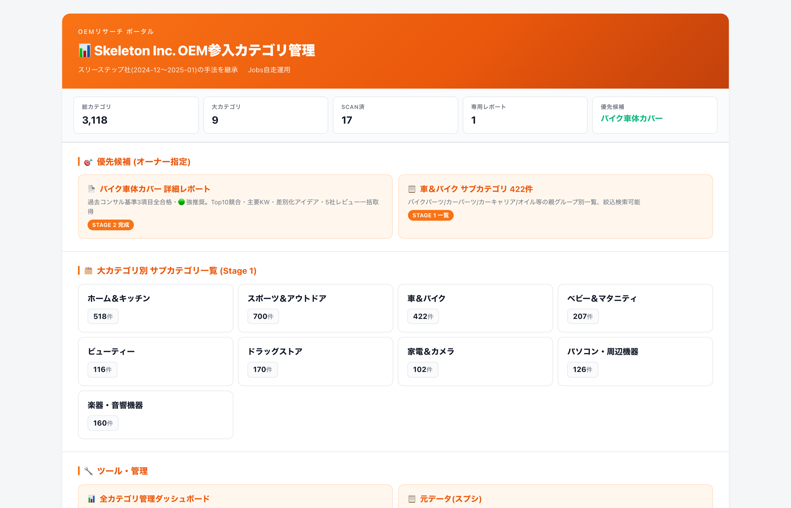
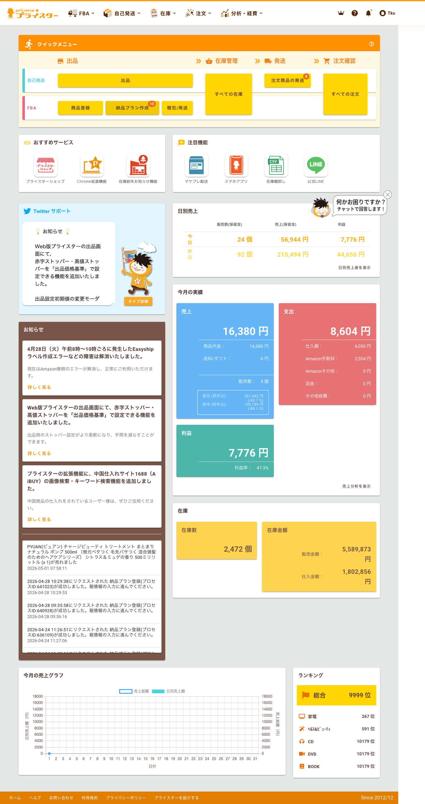
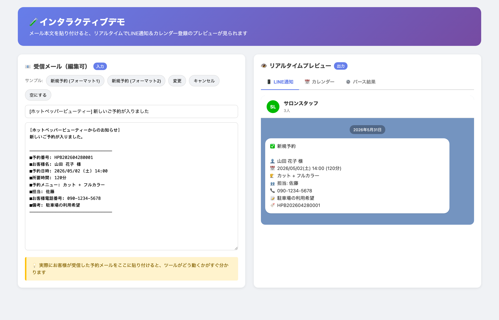
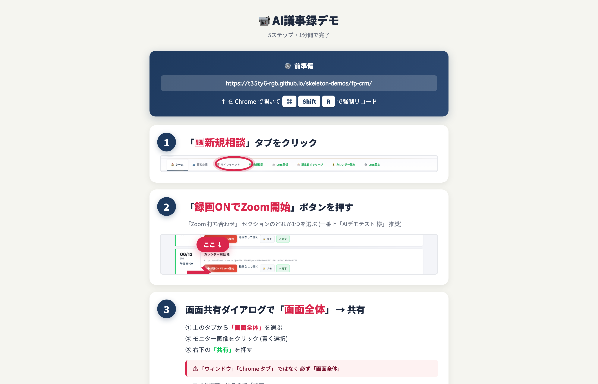
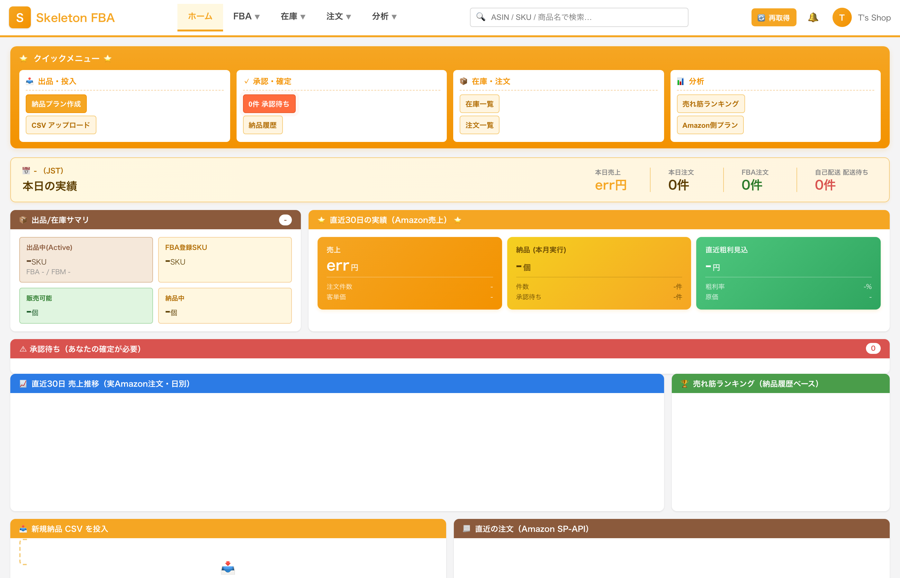
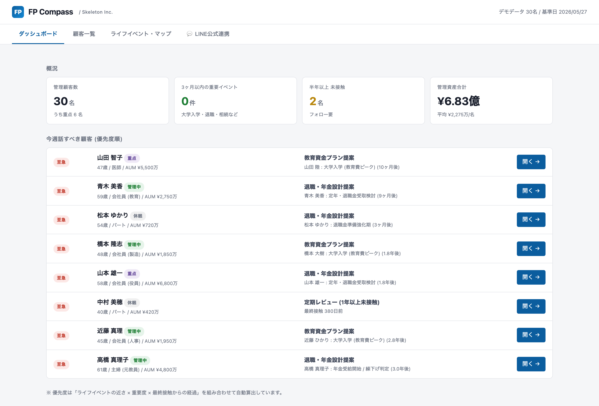
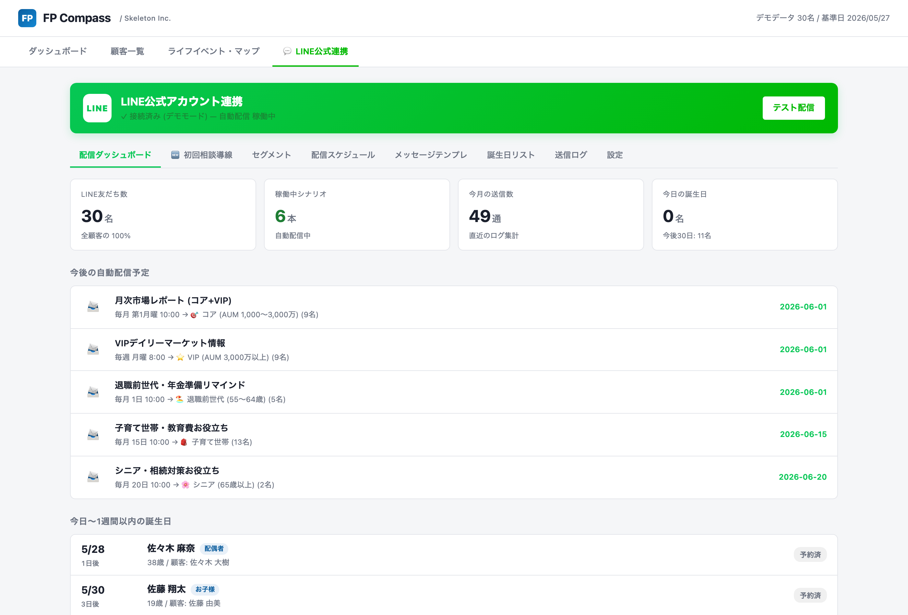
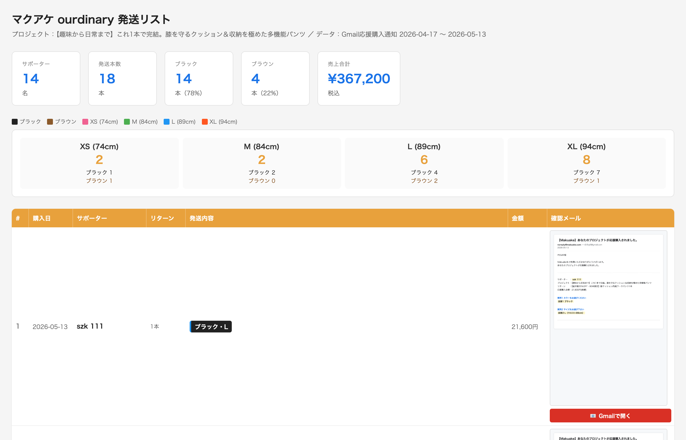
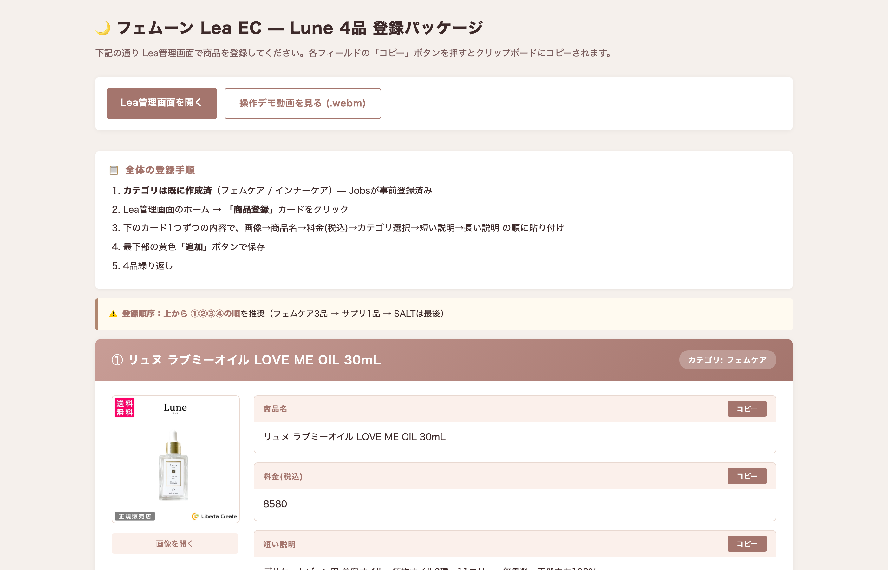
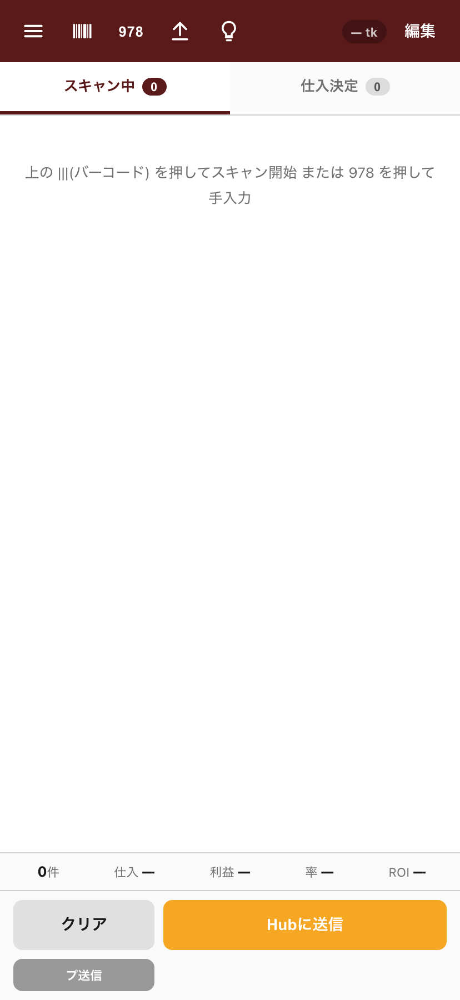

ほぼ全部、答えは "YES"。
請求書、在庫、月次の数字、問い合わせ対応、採用、お客様フォロー…
業種フリー・規模フリー・特殊な業務こそ歓迎。
ほぼ全部、答えは "YES" です。
自社で 15以上のツールを内製・運用し、毎日 無人で稼働させています。
下記はそのうち、画面を公開できるものの一部です。
「自社で使えないものは、お客様にも売らない。」これが私たちの原則です。

Amazon全カテゴリのBSR上位商品を自動収集し、3,118カテゴリを優先度付きでレビュー＆深掘り。次の参入商品が一目で分かるダッシュボード。

プライスター画面をPlaywrightで自動操作。滞留判定→競合価格分析→値下げ実行→LINE通知まで、毎朝7時に無人で動き続けています。

受信メール→AI解析→LINE通知＆Googleカレンダー登録までを2秒で完了。サロン業界向けに販売中の主力プロダクト。

Zoom録画→自動文字起こし→AI要約→顧客台帳に自動保存。FP事務所向けに導入済み、顧客対応の議事録作成が3ステップ・1分で完了。

出品・在庫・注文・分析の全機能を1画面に統合。本日の売上・FBA注文数・売れ筋ランキングを即把握、Amazon SP-API直結で月¥5,500プライスター代替を実現。

「ライフイベントの近さ × 重要度 × 最終接触からの経過」を自動採点して、今日連絡すべき顧客を優先度順に表示。FP事務所向けに本番運用中（30名 / 管理資産6.83億）。

LINE公式アカウントの友だち管理、シナリオ別自動配信スケジュール、誕生日リスト、送信ログを1画面に集約。月次レポート・教育資金プラン提案などのシナリオを自動配信。

マクアケ等のクラファン支援者一覧、色サイズ別在庫、Gmail応援購入通知の自動取り込みまでを統合。支援14名・発送18本・売上¥367,200を一画面でリアルタイム集計。

化粧品ブランド「フェムーン」向けに、Lea EC管理画面への商品登録をワンクリックでコピペできるUI。商品名・料金・カテゴリ・説明文の登録手順を効率化、登録ミスをゼロに。

店舗仕入れ現場で、スマホのバーコードリーダー or 978コードでスキャン→在庫Hubへ自動送信。仕入れ判断の利益率・ROIをスマホ片手で即確認。Android/iOS対応。
スケルトン株式会社は、中小事業者の業務自動化を専門とする会社です。
サロン、物販事業者、小規模法人。
「ITに詳しいスタッフがいなくても、毎朝ボタンひとつで業務が回る」状態をつくることが、私たちの仕事です。
2026年4月、福井で設立。
代表自身が物販・サロン経営の現場で 「面倒な手作業を自動化する仕組み」 を10以上自社運用してきました。
そこで培った自動化ノウハウを、地域の事業者向けに提供しています。
大手SIerが来ない。地元IT業者にAI自動化できる会社はそもそも無い。
だからこそ、福井から始める意味がある。私たちはそう考えています。
経営者・スタッフが「触れる」設計でなければ意味がない。技術的な美しさより、現場で使われる仕組みを最優先します。
売れるか／使われるか、で判断する。お預かりした費用がきちんと事業の利益として返ってくる自動化だけをご提案します。
仮説で大物を作らない。まず最小単位で動かし、現場の手応えを確認しながら段階的に広げていく方法を採ります。
いきなり大きな投資はしません。
「現場の困りごとを聞く」→「ひとつ自動化してみる」→「成果が出た領域を広げる」の3ステップでお付き合いします。
30分のオンライン面談で、御社の「自動化できそうな業務」を洗い出し、優先順位つきPDFレポートをお渡しします。
診断で見つかった業務のうち、ひとつだけを実際に自動化してお試しいただけるプランです。効果を実感してから次へ。
複数業務をまとめて自動化し、毎月の運用までセットで請け負います。月額の保守でずっと安定して動かし続けます。
業種を問わず、中小企業ならどこにでもある6つの "あるある" をご用意しました。
下のチェックリストを読みながら、「あ、これ うちだ」と思った瞬間が、自動化を始めるサインです。
ぜんぶ、現場で本当に動いている設計です。
会計ソフト・販売管理・銀行口座のデータを毎朝自動集計して、Googleスプレッドシートのダッシュボードに反映。売上・粗利・予算進捗・前年比、ぜんぶ翌朝には見えます。経営会議の準備は不要、いつでも最新です。
顧客台帳に「最終接触日」「次回フォロー日」を自動記録。リマインドが必要なお客様だけ、毎朝LINEに「今日フォローする顧客リスト」が届きます。お礼メールのテンプレ送信、誕生日・契約更新前の連絡まで全部自動です。
取引先マスタと月次の取引データから、請求書PDFを全社分一括自動生成。インボイス対応・送付状・宛先メールまで自動で組み立て、月末25日にワンクリックで全社送信。入金確認も口座データと自動照合、未入金は自動でリマインドが飛びます。
入出庫データを販売管理・倉庫システムから自動連携、リアルタイム在庫がスマホでいつでも確認可能に。発注点を下回ったら自動でアラート、デッドストックも毎月レポート。棚卸しは、画面の数字とスキャンで30分で終わります。
問い合わせフォーム・LINE・メールに来た質問を、AIが24時間一次対応。よくある質問は即答、複雑な案件は担当者に自動振り分け＋LINE通知。回答テンプレは御社の過去のやり取りから自動学習します。
候補者には日程候補URLを送って自動予約、面接官カレンダーと同期。応募者ステータスは台帳で一元管理、合否通知メールはステータス変更で自動送信。入社書類は電子契約に切替えれば、郵送ゼロになります。
※ 上の6つは、よくある例です。「これは違うけど…」という方は、次の家へどうぞ ▼
さっきの6つは、よくある "あるある" の例にすぎません。
御社の現場には、もっと地味で、もっと特殊で、
「これは、自動化なんて無理だろう」と諦めている業務が、
まだまだ埋もれているはずです。
市販のツールに無い。業界が特殊すぎる。社員のITリテラシーが低い。
──そういう、他社が首を振った業務こそ、私たちの本領です。
まずは現状の業務内容や、お困りの作業をお聞かせください。「これって自動化できる?」というレベルの相談でも大歓迎です。オンライン or 福井オフィスにて、初回 30〜60分。
ヒアリング内容から「どの作業を、どの範囲で自動化できるか」を診断し、費用感とスケジュールをご提示します。複数案を比較してから決められる形でお返し。
ご要望と現場の使い勝手に合わせて、ツールを構築します。途中で動くプロトタイプをお見せしながら、認識ズレなく進めます。期間は規模により2〜8週間。
実環境で動作確認しながら、現場で実際に使ってみる期間です。「もうちょっとこうしたい」を反映しながら、本番運用に耐える状態まで仕上げます。
本番稼働スタート後も、毎月の動作確認・改善提案・トラブル対応をサポート。ツールは作って終わりではなく、業務の変化に合わせて育てていきます。
「うちの業務、何から自動化できる？」というご質問だけでも歓迎です。
まずは無料の業務お悩み診断（30分）からご相談ください。